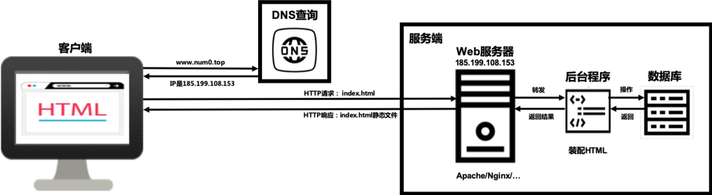

Hexo+Github搭建博客记录
温故而知新，加上疫情之后记忆力感觉不比从前了，所以要养成随手记笔记的好习惯，免得未来某一天连自己的代码和操作都看不懂了（捂脸）
序
使用Hexo+Github Pages搭建的个人博客属是一个静态网站，但是可以达到一些动态的交互效果。
静态网站：用户和Web页面之间不能做一些交互
动态网站：允许用户和网站做一些交互
静态网站大致运作流程如下

Github pages是Github公司提供的免费静态网站托管服务,当把HTML等资源文件存放到GitHub指定的仓库中时，GitHub Pages服务会对这些文件进行处理并把它展示为一个网站，因此其可以代替Web服务器的功能，只需要将在本地生成的HTML等资源文件上传到GitHub的仓库中即可实现类似的Web服务器功能，可以响应请求并把相应的资源文件发送给客户端。
相比于Dijango、Flask、Spring等Web框架，hexo对相关编程语言基础的需求不高，可以将Markdown文本快速生成html文件，大大提升效率。
①环境
node.js下载安装后npm安装hexo博客，代码使用如下
|
|
安装完成后运行
|
|
来确认安装情况，出现如下报错：
报错
|
|
解决方法如下
管理员权限运行Powershell，执行
|
|
选定位置，用
|
|
出现问题
|
|
错误原因
权限不够
解决方法如下

在属性中将文件夹的用户完全控制权限打开，重新执行命令。
创建blog文件夹并初始化，此时可以尝试
|
|
出现问题
打开http://localhost:4000的尝试以失败告终
解决问题
4000端口被占用了，用
|
|
来更改端口号后重试，成功打开http://localhost:5000
②部署
本地部分完成后，将其部署到Github上的自建库里
这里首先要新建一个GitHub库，命名为“用户名.github.io”的公共库，创建后会默认自动启动HTTPS
然后安装hexo-deployer-git插件：
|
|
安装成功后修改**_config.yml**文件内的URL部分和Deployment部分：
|
|
上传之前别忘了先连接github并配置ssh密匙:
|
|
再将
Windows：C:\Users\用户名\.ssh下的id_rsa.pub
Linux： /root/.ssh/id_rsa
文件中的密匙添加到GitHub上的个人设置-ssh keys中，配置好后可以用ssh -T git@github.com来验证是否连接成功
然后运行hexo d将网站部署到Github页面
这样访问https://用户名.github.io就能看到刚才做好的Hexo网站了
③解决图床问题
建立一个新的Github库用来存放图片，下载并安装工具PicGo用于快速上传图片到Github图床库并获取图片URL链接
在Github的Setting最下方的Developer Settings，Personal access tokens生成一个token，只选repo那栏就成，在PicGo中设置好之后直接拖拽上传就成了
2024/05/14
这是个蠢办法，直接在source里加一个images文件夹，设置typora将复制进来的图片都放在那里并自动根据文件名创建文件夹，设置地址为相对地址，齐活。
将hexo文件夹同步并自动上传
将hexo文件夹放到OneDrive上以便Windows多端方便对其进行编辑，并在服务器上安装OneDrive(非官方)以便在手机上通过ssh进行编辑和设置定时上传到GitHub功能